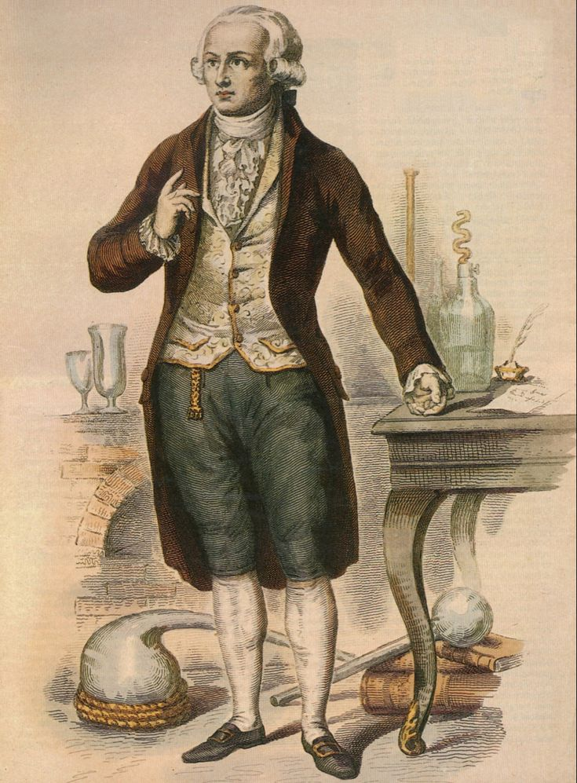
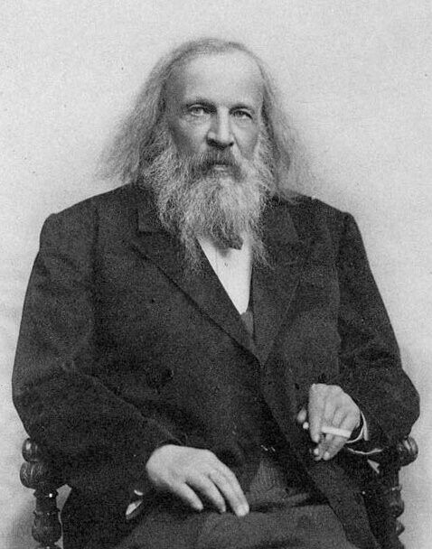
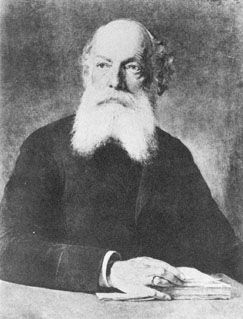
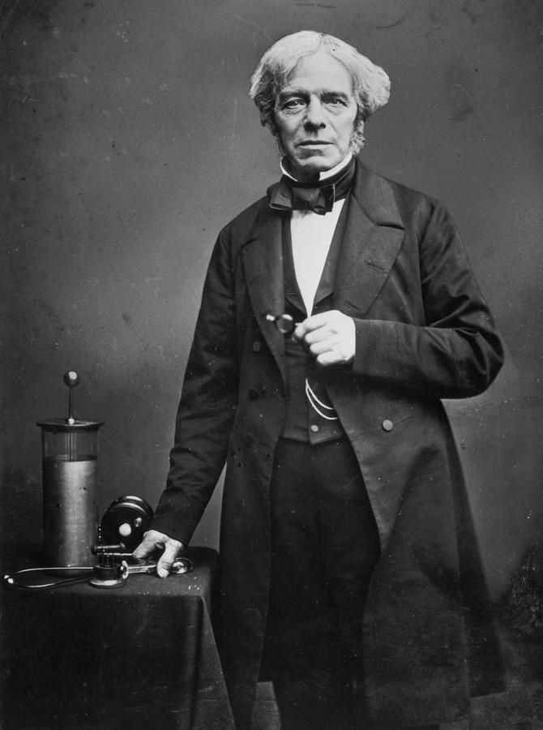
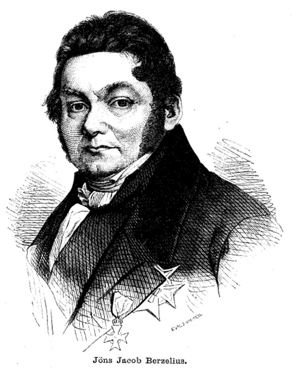

Antoine Lavoisier

Antoine Lavoisier
Foi um químico francês do século XVIII, conhecido como o "pai da química moderna".
Ele estabeleceu a Lei da Conservação das Massas, identificou o oxigênio e o hidrogênio, e ajudou a
reformular a nomenclatura química.
Suas contribuições foram fundamentais para a revolução científica, embora sua carreira tenha sido
interrompida durante a Revolução Francesa, quando foi executado.
Dmitri Mendeleev
Дми́трий Менделе́ев

Dmitri Mendeleev
Foi um químico russo do século XIX, famoso por desenvolver a Tabela Periódica dos
Elementos.
Ele organizou os elementos químicos em ordem crescente de massa atômica, prevendo as propriedades de
elementos ainda não descobertos.
Sua tabela periódica tornou-se um marco na química e continua sendo essencial para o estudo dos
elementos.
Friedrich Kekulé

Friedrich Kekulé
Ele propôs que os átomos de carbono podiam formar cadeias e estruturas cíclicas, revolucionando a química
orgânica.
Suas ideias foram fundamentais para o desenvolvimento da teoria estrutural dos compostos orgânicos.
Michael Faraday

Michael Faraday
Michael Faraday foi um renomado cientista britânico do século XIX, considerado um dos maiores
experimentalistas da história da física e química.
Ele fez descobertas fundamentais no eletromagnetismo, como a indução eletromagnética e as leis da
eletrólise, revolucionando a ciência e a tecnologia.
Além de suas contribuições científicas, era conhecido por suas habilidades didáticas e por popularizar a
ciência por meio de conferências públicas.
Humphry Davy

Humphry Davy
Humphry Davy foi um importante químico britânico do final do século XVIII e início do XIX, pioneiro no
campo
da eletroquímica.
Ele ficou famoso por suas descobertas de vários elementos químicos, incluindo o sódio, potássio, cálcio
e
magnésio, através da eletrólise.
Davy também inventou a lâmpada de segurança para mineiros (lâmpada de Davy) e foi mentor de Michael
Faraday,
além de ser um popular conferencista na Royal Institution.
Jacob Berzelius

Jöns Jacob Berzelius
Jöns Jacob Berzelius foi um renomado químico sueco do século XIX, considerado um dos fundadores da
química
moderna.
Ele desenvolveu a notação química moderna, introduzindo os símbolos dos elementos (como H, O, C) e os
conceitos de fórmulas químicas, além de descobrir novos elementos como o silício, selênio e tório.
Berzelius também foi pioneiro no estudo da eletroquímica, cunhou os termos "catálise" e "proteína", e
estabeleceu a teoria do dualismo eletroquímico, influenciando gerações de cientistas.